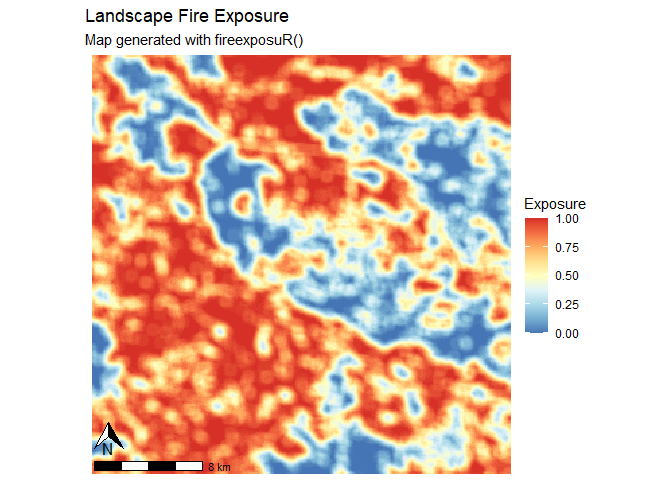
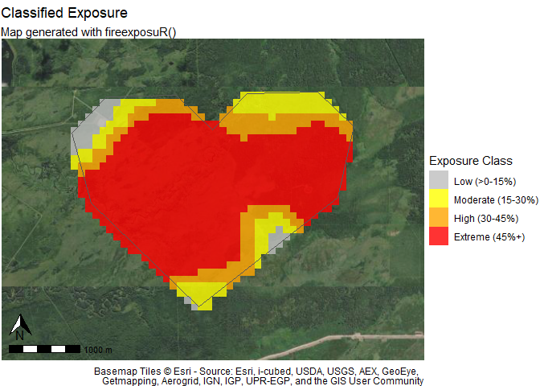

The goal of fireexposuR is to provide a standardized and accessible platform for the computation and analysis of wildfire exposure. Wildfire exposure assessments are a decision support tool in wildfire management and can be applied for multiple temporal horizons and spatial extents. This package automates the methods previously documented in a series of scientific publications.
The functions in this package require the pre-preparation of data; an accompanying paper details suggestions for data acquisition and preparation in accordance with various budget limitations and user experience levels. The initial release of the package provides a collection of functions that assist users with conducting wildfire exposure and directional vulnerability assessments for values and landscapes, and includes methods for validating the metric for an area of interest. Outputs from the functions include spatial data, tables, graphics, and maps that can be further analyzed or modified directly in R or exported for use in other applications.
Installation
You can install the development version of fireexposuR from GitHub with:
# install.packages("devtools")
devtools::install_github("heyairf/fireexposuR")Usage example
This is a basic example which shows a workflow to assess wildfire exposure on a landscape and within an area of interest.
Data preperation
First, some example data will be generated:
library(terra)
#> terra 1.7.71
# generate example hazard data -----------------------------
set.seed(0)
e <- c(45,55,495,505) * 10000
r <- rast(resolution = 100, extent = ext(e))
values(r) <- sample(c(0,1), ncell(r), replace = TRUE)
crs(r) <- "EPSG:32608"
r <- sieve(r, threshold = 50, directions = 4)
haz <- sieve(r, threshold = 500, directions = 4)
# generate example AOI polygon -----------------------------
filepath <- "extdata/builtsimpleexamplegeom.csv"
g <- read.csv(system.file(filepath, package = "fireexposuR"))
m <- as.matrix(g)
aoi <- vect(m, "polygons", crs = haz)
# ----------------------------------------------------------Compute exposure
Now, we will use the hazard data to compute the exposure to long-range ember transmission.
library(fireexposuR)
exp <- exposure(haz, tdist = "l")Visualize exposure
Once we have an exposure raster the rest of the package functions can be used to visualize it in different ways. For a landscape, we can map exposure with a continuous scale with mapexpcont():
mapexpcont(exp)
#> <SpatRaster> resampled to 501264 cells.
We can also see how that exposure is distributed within a localized area of interest with exposure classifications using mapexpclass(). Now we can see that within our area of interest the northwest corner is a potential entry point for long-range embers from the landscape.
Note: our imaginary area of interest is in the middle of the Pacific Ocean so the base map does not provide further reference.
mapexpclass(exp, classify = "local", aoi)